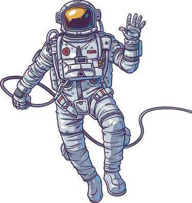
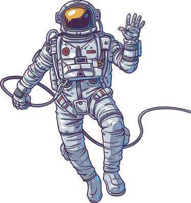

Soyuz 2.1a | Soyuz MS-22
A la Luna de regreso
00
Días00
Horas00
Minutos00
Segundos00
Días00
Horas00
Minutos00
Segundos

Un cohete Soyuz 2.1a de Roscosmos aguarda, para realizar la misión tripulada con la cápsula Soyuz MS-22. Su lanzamiento está programado desde el Cosmódromo de Baikonur, sitio 31/6, en Kazajistán, partiendo el 21 de septiembre a las 13:54 UTC.
 
